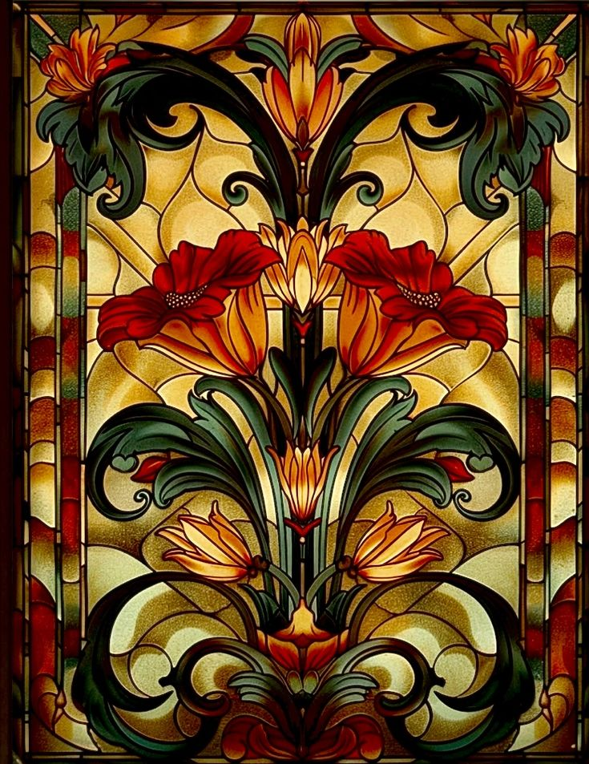
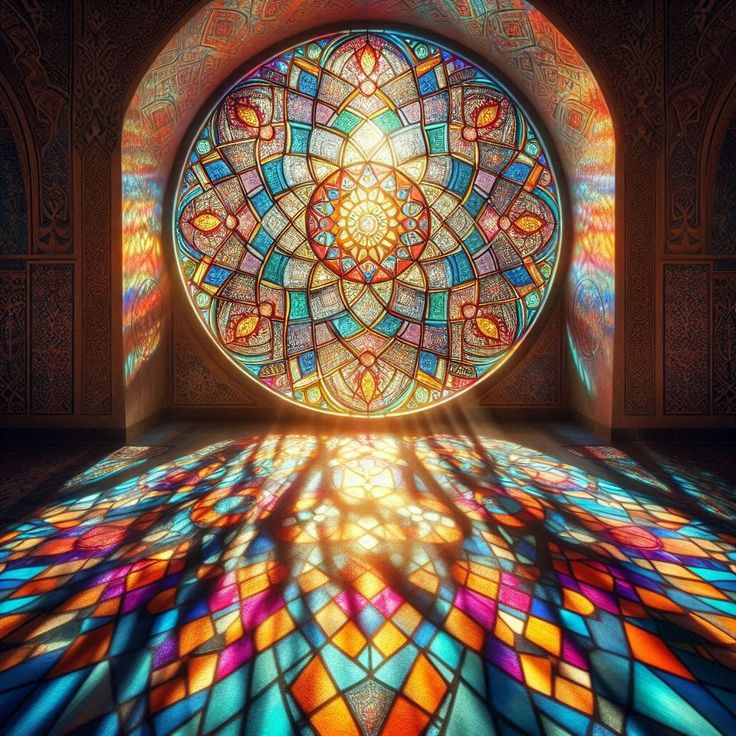
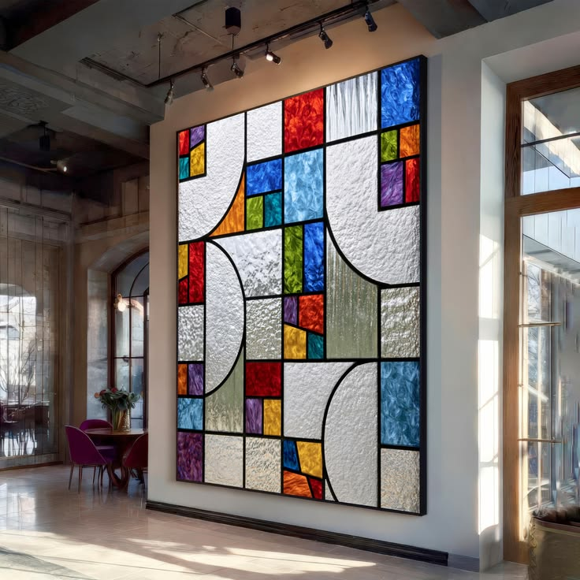
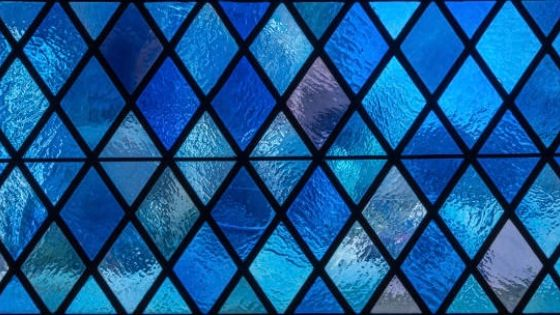
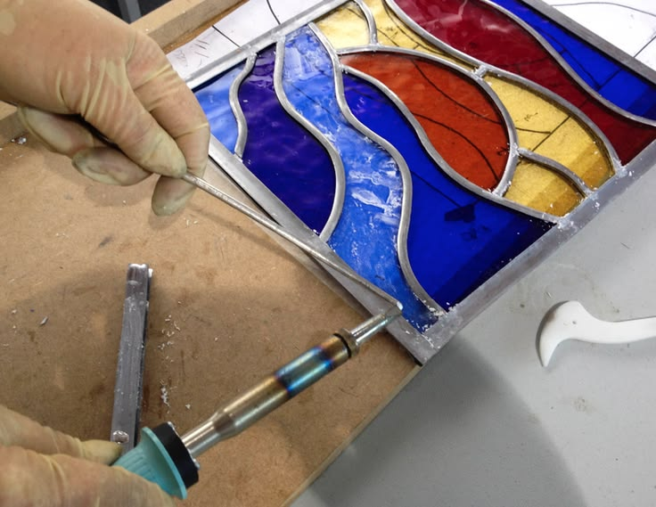
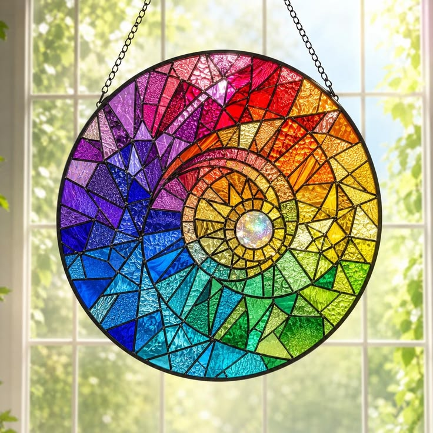
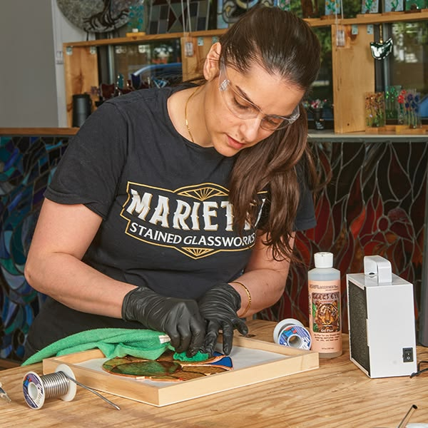
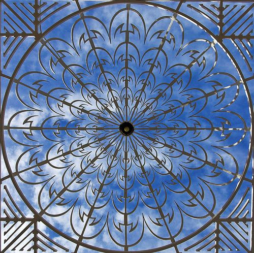

Edinburgh — Handcrafted Glass Art Since 1987
Light
Made Permanent
Each panel is cut, leaded, and soldered by hand — a fusion of ancient craft and living colour that transforms any space into something transcendent.
Our Gallery
Every Panel
a Story in Light
Four decades of commissions, restorations, and original works. Each piece is unique — never replicated.
View All Works





The Studio Philosophy
"We don't make glass.
We make light visible."


How We Work
Craft That Endures Centuries
Every piece we create follows the same time-honoured process — from the first design sketch to the final installation. Ancient technique, modern vision.
-
Design & Consultation
We begin with your vision — a detailed consultation to understand space, light direction, and artistic intent. Full-scale cartoons are drawn by hand.
-
Glass Selection
Hand-selected from European sheet and antique glass makers — each pane chosen for its specific colour temperature, texture, and light transmission.
-
Cut, Lead & Solder
Glass is cut to shape, fitted into milled lead came, and soldered by hand at every joint — the same technique used in Gothic cathedrals.
-
Install & Certify
Our team handles all installation, glazing, and structural certification. We guarantee every panel for 25 years against lead failure.
-
Ecclesiastical
Gothic & Cathedral Windows
Soaring lancets, rose windows, and tracery lights crafted for places of worship, heritage buildings, and civic architecture. Lead came in traditional profiles.
Explore Collection -
Residential & Interior
Art Nouveau & Decorative Panels
Inspired by the naturalistic forms of the Belle Époque — flowing botanicals, peacock feathers, and sinuous line work for doors, skylights, and feature walls.
Explore Collection -
Contemporary
Geometric & Abstract Glass
Bold, graphic compositions for modern homes, offices, and public spaces. Fused glass, dalle de verre, and copper foil techniques give infinite creative freedom.
Explore Collection
Custom Commissions
Begin Your
Commission
Whether you have a fully formed design or a vague feeling, our team will guide you from first sketch to installed masterpiece. Every commission is a conversation.
25-Year Lead Guarantee
Every panel leaves the studio with a written structural guarantee covering lead failure, cement bond integrity, and glass stability.
6–16 Week Turnaround
Small decorative panels in 6–8 weeks. Large architectural commissions in 12–16 weeks from design sign-off.
Full Installation Service
Our craftsmen handle delivery, fitting, structural sealing, and sign-off — nationwide coverage across the UK and Ireland.